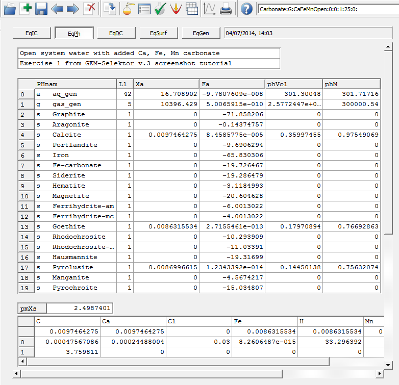
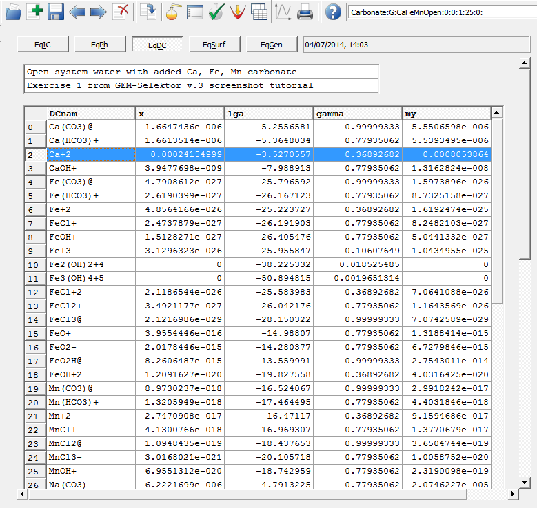

Previous Page Back to Start Page
(15) Detailed results of the
calculation of equilibrium can be seen in the "EqDemo" window, which can
be opened by clicking the "Open EqDemo window..."  toolbar button on the "Single
Thermodynamic System" dialog.
toolbar button on the "Single
Thermodynamic System" dialog.
The "EqIC" page (below) presents
the GEM IPM dual solution vector u
; logarithms of total dissolved element molal concentrations in aqueous
electrolyte lgm_t (and
those in molalities m_t );
the mass balance residuals Cb
(moles); and, for convenience, the input bulk composition vector b
(in moles).
The "EqPh" page (below) displays
the list of phases and their total mole amounts in equilibrium Xa
(both also seen in the "Results" tab of the Single Thermodynamic system
dialog).
In addition, the calculated volumes phVol
and masses phM of
phases are shown, as well as the phase stability criteria Fa
. Values of Fa close to zero show that respective phases are stable,
whereas negative values, e.g. Fa = -0.144 for Aragonite, show that the
phase is unstable and should not be present in positive amount in the
equilibrium state.

In the lower part of the above screen image, the pmXs data field shows the total mass (g) of all solid phases in this equilibrium state. The table below that shows the elemental bulk compositions (moles) of: all solid phases taken together bXs_(first row below the names of chemical elements); then bulk elemental compositions of phases-solutions bXa (next rows) in the order of their appearance in the PHnam list. These three data objects are very useful in setting up various process-extent, box-flux or sequential reactor geochemical models.
The "EqDC" page (below) shows
the detailed speciation: the list of names of species (Dependent
Components); their mole amounts in equilibrium x
(the GEM IPM primal solution); the decimal logarithms of activities
(fugacities) of species lga ; the
activity coefficients gamma ; and
molality concentrations my
in mol per 1 kg of water-solvent (aquatic systems only).
This data can also be seen in the "Results" tree on the Single
Thermodynamic system dialog, if entries for phases are expanded. Note that
in the EqDC page, the species are listed in the order of appearance of
phases (e.g. species of aqueous phase first, then gas phase, then graphite
phase, and so on), but phases are not shown on this page.

(16) To keep the results out of GEM-Selektor, the easiest way is to copy-paste them into Excel or LibreOffice spreadsheet. You can do this with any table in EqDemo window page or any part of the table, by using the mouse or Shift-Arrow keys to select the data, then copy to clipboard by pressing Ctrl-C or using the right-mouse-button menu. The whole table can be selected by clicking on its most upper-left corner, then press Ctrl-C (or Ctrl-H to copy with row- and column names). Then you can paste the clipboard contents into the spreadsheet.
You can also print the equilibrium speciation results into a text file using the "Print" toolbar button and selecting the print script (pscript...) from the appearing list. Such scripts are SDref records that can be modified by editing them in the Database mode (advanced).
Back to main GEM-Selektor page 
Select one in the middle and press the "Ok" button.
Next, you will be asked to select a directory and provide a (new)
filename:

Press "Save" to create the
printout file.
If you are curious how the
printing script looks like, select a Help->Scripts menu, changethe
filter to "pscript:*.*." and find a record
"pscript-eqst-aquat:0000:multi:" in the appearing list. Double-clickon
it to see the "SDref" window and select Page 2 there:

If you want a printout in other formats, or you do not want to printsome
data and instead print some other data, you can save this SDref record
under another key into your project database, modify it andselect when
performing future printouts.